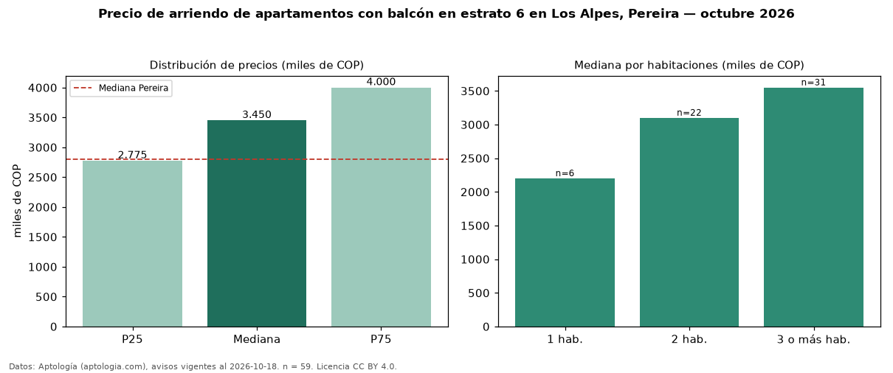

Precio de arriendo de apartamentos con balcón en estrato 6 en Los Alpes, Pereira — octubre 2026
COP 3,45 millones al mes es el canon mediano de apartamentos con balcón en estrato 6 en arriendo en Los Alpes, Pereira (n = 59 avisos). Eso es 11 % más que la mediana de los apartamentos en estrato 6 en arriendo de Los Alpes (COP 3,10 millones, n = 87); este segmento reúne el 68 % de esos avisos. Por metro cuadrado, la mediana es COP 32.681/m² al mes (n = 58), 1 % por debajo de los apartamentos en estrato 6 en arriendo de Los Alpes (COP 32.857/m²). El área mediana anunciada es 90 m². El segmento con más oferta es el de 3 o más habitaciones (31 avisos, mediana COP 3,55 millones); pasar de 1 habitación a 3 o más habitaciones cambia la mediana +61 %. La administración mediana declarada es COP 516.000 al mes (n = 39), aparte del canon. La mediana de todos los apartamentos en arriendo de Pereira es COP 2,80 millones (+23 % de diferencia). La mitad central de los avisos va de COP 2,77 millones a COP 4,00 millones (razón 1,4), una dispersión moderada. Datos: Aptología (aptologia.com), CC BY 4.0 — https://www.aptologia.com/arriendo/pereira/los-alpes. Archivos: PDF, CSV con las cifras y gráfica PNG.

| Avisos únicos | 59 |
|---|---|
| Percentil 25 | COP 2.775.000 |
| Mediana | COP 3.450.000 |
| Percentil 75 | COP 4.000.000 |
| Mediana por m² | COP 32.681 |
Fuente: avisos vigentes de portales inmobiliarios recopilados por Aptología, deduplicados (mínimo 30 avisos únicos por celda). Precios pedidos, no cerrados. Fecha: 2026-10-18.